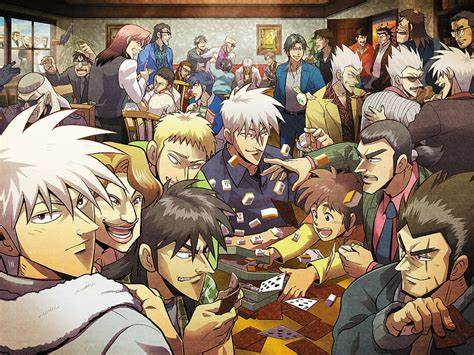

利根川
背景： 利根川在Teiai企业中担任中层管理人员的角色，他是兵藤和尊的直属下属，负责执行兵藤的命令，确保赌博游戏的顺利进行。他通常冷酷无情，对参与游戏的债务人的命运毫不关心。性格特点：
冷静沉着：利根川在处理问题时总是保持冷静，不易被情绪所左右。
忠诚：他对兵藤和尊非常忠诚，总是尽力完成上级交给的任务。
无情：在执行任务时，利根川对债务人的痛苦和绝望视若无睹。
在故事中的表现：
在“限定猜拳”游戏中，利根川是游戏的监督者，他确保所有参与者遵守规则，并在游戏过程中对开司等人施加压力。
在“E-卡游戏”中，利根川再次出现，这次他仍然是Teiai的代表，监督游戏的进行。
在后续的故事中，利根川也会以不同的身份出现，继续与开司等人产生冲突。
与开司的关系： 利根川与开司的关系主要是基于对手和游戏监督者的身份。他经常是开司在赌博游戏中面对的障碍，两人之间存在着明显的对立关系。然而，随着故事的发展，利根川的角色和立场也有所变化，他的一些行为可能会让观众对他的动机和性格有更深的理解。 逆境无赖的利根川，是一部揭示人性复杂与社会残酷的励志小说。故事围绕主人公利根川，一个在逆境中挣扎、拼搏、成长的坚韧斗士，展现了他从低谷攀向高峰的传奇历程。利根川的形象，不仅是对个人奋斗精神的赞美，更是对那些在黑暗中寻找光明者的鼓舞。
利根川，一个出身贫寒的普通青年，他的生活充满了挑战。在故事的开端，利根川因为一场突如其来的经济危机失去了工作，紧接着，他又遭遇了家庭破裂、朋友背叛等一系列打击。面对接踵而至的逆境，利根川并未选择放弃，而是以一颗不屈的心，开始了他的逆袭之路。
利根川的性格复杂而深刻。他既有坚韧不拔的意志，也有狡猾多变的手段。在逆境中，他学会了如何在社会的丛林法则中生存，如何在残酷的竞争中脱颖而出。以下是对利根川人物形象的几个亮点：

坚韧不拔：利根川面对生活的重重打击，始终保持着坚定的信念。他的坚韧不仅体现在对目标的执着追求上，更体现在对逆境的勇敢面对上。
智慧与狡猾：利根川在逆境中锻炼出了非凡的智慧，他善于观察、分析，总能找到解决问题的最佳方案。同时，他也不乏狡猾，懂得在必要时刻使用非常手段。
情感与理性：利根川虽然经历了无数磨难，但他内心依然保留着对亲情的渴望和对友情的珍视。在理性的决策背后，是他丰富的情感世界。
成长与蜕变：利根川的故事是一个典型的成长故事。他在逆境中不断学习、进步，从一个懵懂的青年成长为一位成熟、有担当的男子汉。
逆境无赖的利根川，故事情节紧凑，人物性格鲜明。以下是利根川成长历程的几个阶段：
第一阶段是觉醒阶段。在这个阶段，利根川在失业和家庭的压力下，开始反思自己的过去，认识到必须改变才能生存。他开始学习新的技能，寻找新的机会。
第二阶段是拼搏阶段。利根川在这个阶段找到了新的工作，并在职场中不断磨砺自己。他面对各种挑战，用自己的智慧和勇气，逐步赢得了同事和上司的认可。
第三阶段是逆袭阶段。利根川在职场中站稳脚跟后，开始展现出他的野心和抱负。他通过一系列精心策划的行动，逐步提升自己的地位，最终成为公司的高层管理者。
逆境无赖的利根川，不仅是一部个人奋斗史，更是一部深刻的社会剖析作品。它揭示了以下几个社会现实：
社会的不公：利根川的遭遇反映了社会的不公和弱肉强食的法则。在逆境中，他不仅要与自己的命运抗争，还要与社会的偏见和不公斗争。
人性的复杂：利根川的形象展现了人性的多面性。在逆境中，他既表现出善良和正直，也有为了生存而不得不采取的狡猾和手段。
成功的代价：利根川的成功并非一帆风顺，他付出了巨大的代价，包括时间、精力甚至是牺牲自己的感情。
逆境无赖的利根川，是一部值得细细品味的作品。它告诉我们，逆境是人生的试金石，只有那些勇敢面对、不断拼搏的人，才能在逆境中找到自己的价值，实现人生的逆袭。利根川的故事，不仅是对个人奋斗的赞美，更是对那些在逆境中永不放弃的人的致敬。